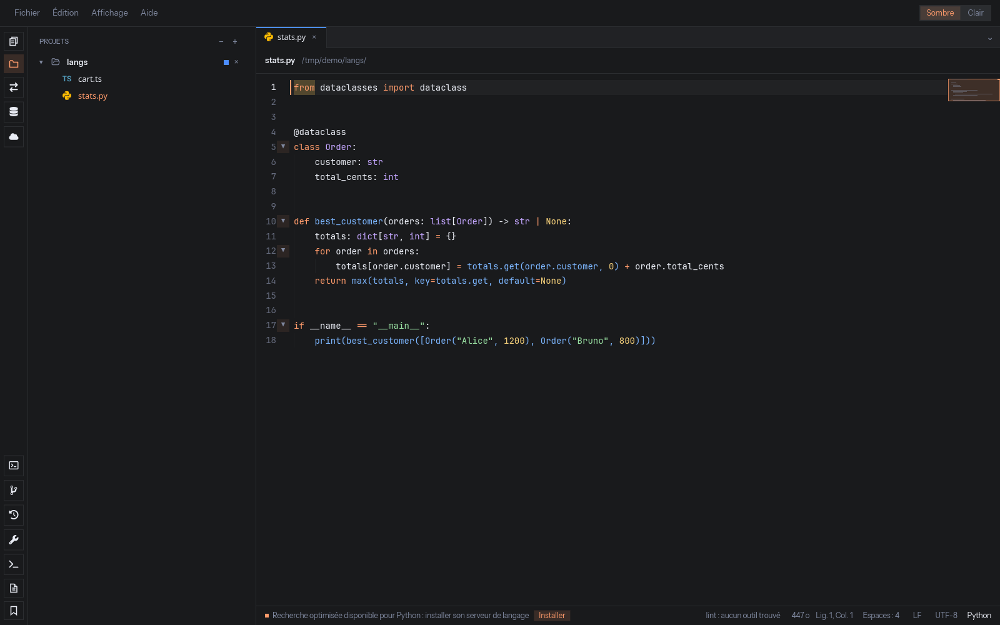
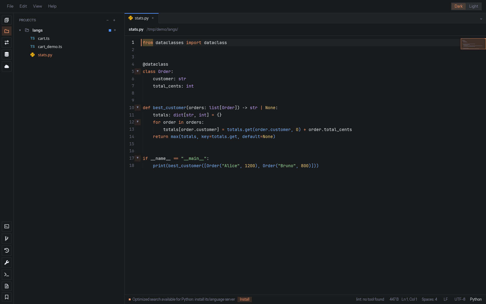
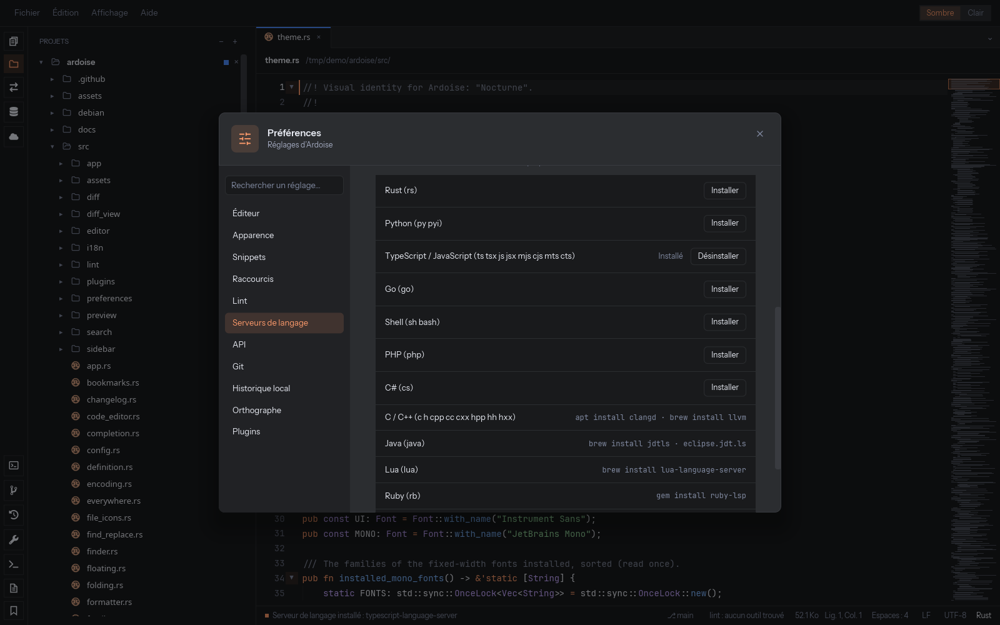
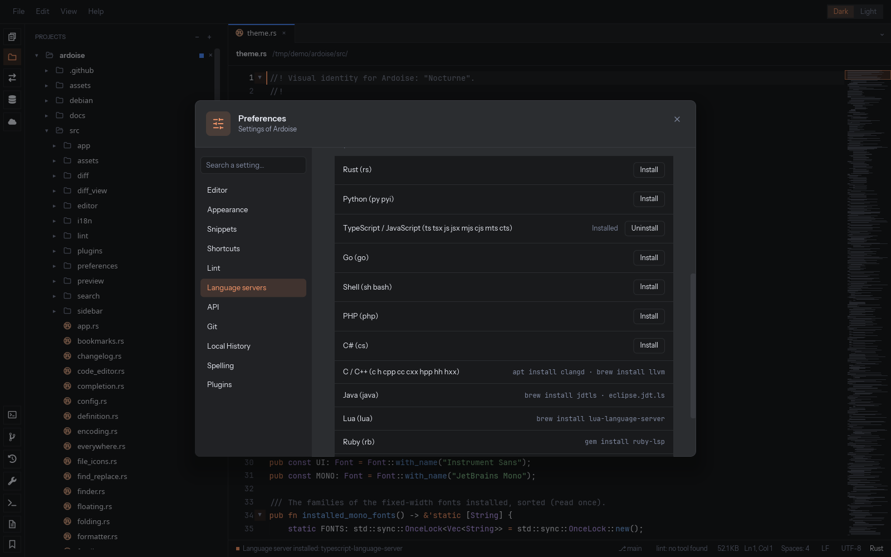

Langages et outilsLanguages and tools
Coloration, serveurs de langage, formatage, lint, orthographe, encodage.Highlighting, language servers, formatting, lint, spelling, encoding.
Coloration syntaxiqueSyntax highlighting
Plus de 30 langages sont colorés à l'aide de grammaires TextMate. Le langage est détecté d'après l'extension ; pour le changer, utilisez Affichage › Langage du fichier…. Un fichier sans extension s'affiche en texte brut jusqu'à ce que vous l'enregistriez avec une extension.
30+ languages are highlighted with TextMate grammars. The language is detected from the extension; to change it, use View › File language…. A file with no extension shows as plain text until you save it with one.


Un montage de trois fenêtres côte à côte (Rust, Python, TypeScript) montrant la coloration. Facultatif : une seule capture convient.A montage of three windows (Rust, Python, TypeScript) showing highlighting. Optional: a single screenshot will do.
Capture à venirScreenshot to comeServeurs de langageLanguage servers
Facultatifs, ils donnent des résultats exacts pour les définitions et la complétion. Préférences › Serveurs de langage en installe (ou retire) un par langage, sans droits administrateur ; ils vivent dans ~/.local/share/ardoise/lsp.
Optional, they give exact results for definitions and completion. Preferences › Language servers installs (or removes) one per language, without administrator rights; they live in ~/.local/share/ardoise/lsp.
| Installeur nécessaireInstaller needed | LangagesLanguages |
|---|---|
npm | Python, TypeScript / JavaScript, Shell, PHPPython, TypeScript / JavaScript, Shell, PHP |
rustup | Rust |
go | Go |
dotnet | C# |
| Aucun (commande affichée)None (command shown) | C / C++, Java, Lua, Ruby, Zig, Kotlin, SwiftC / C++, Java, Lua, Ruby, Zig, Kotlin, Swift |


Préférences › Serveurs de langage avec quelques langages, l'un installé, l'autre proposant l'installation.Preferences › Language servers with a few languages, one installed, another offering to install.
Capture à venirScreenshot to comeFormatageFormatting
Voir Édition › Formater le code. Les outils (prettier, rustfmt, black…) s'exécutent dans le dossier du fichier ; ils doivent être installés.
See Editing › Formatting code. Tools (prettier, rustfmt, black…) run in the file's folder; they must be installed.
Problèmes, lint et orthographeProblems, lint and spelling
Ce que trouvent les serveurs de langage s'affiche comme des problèmes ; Édition › Problèmes permet de les rechercher, de les corriger et de passer au suivant ou au précédent. Le plugin Lint y ajoute les linters du projet, et le plugin Orthographe souligne les mots mal écrits.
What language servers find shows as problems; Edit › Problems checks for them, fixes them and goes to the next or previous one. The Lint plugin adds the project's linters, and the Spelling plugin underlines misspelled words.
Encodage et fins de ligneEncoding and line endings
Les fichiers doivent être en UTF-8 ; les fins de ligne (LF / CRLF) et le retour final sont conservés tels quels. Si un fichier est mal lu, la palette propose « Encodage… » pour le relire dans un autre encodage (enregistrez ou abandonnez d'abord vos modifications). Les préférences règlent l'encodage et les fins de ligne des nouveaux fichiers.
Files must be UTF-8; line endings (LF / CRLF) and the final newline are kept as they were. If a file is misread, the palette offers “Encoding…” to read it again in another encoding (save or discard your changes first). The preferences set the encoding and line endings of new files.